BẮT ĐẦU SỬ DỤNG MẠCH VBLUno51 VỚI MBED-OS (mbed Online Compiler)
PHẦN 1: SƠ ĐỒ PINOUT
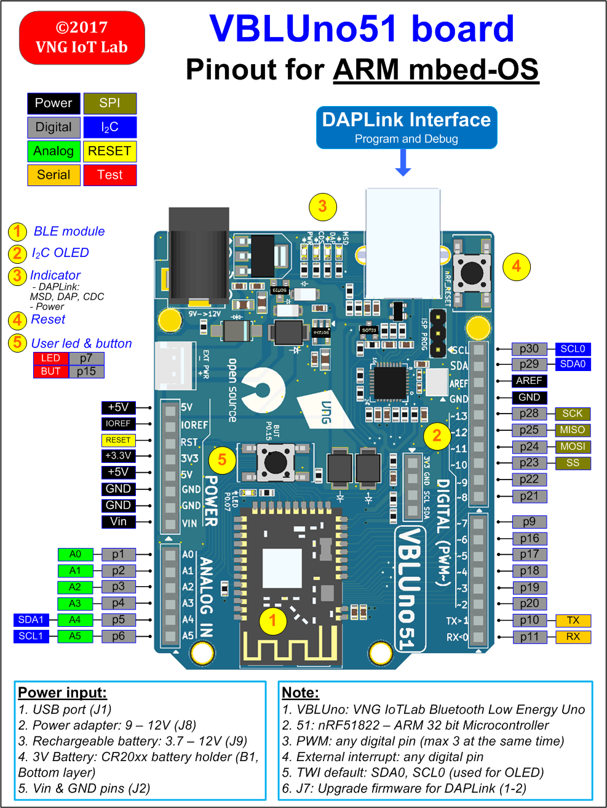
PHẦN 2: GIỚI THIỆU HĐH NHÚNG ARM MBED-OS
Khi xây dựng một hệ thống Internet of Things (IoT), việc lựa chọn platform để thiết kế và xây dựng hệ thống là hết sức quan trọng. ARM Inc là công ty sản xuất chip vi điều khiển ARM nổi tiếng, được ứng dụng rộng rãi trong hệ thống nhúng và thiết bị di động. Với lợi thế của nhà thiết kế chip, hãng cung cấp một nền tảng hoàn chỉnh để phát triển hệ thống IoT với tên gọi ARM mbed IoT Device Platform.

Thành phần quan trọng của ARM mbed IoT Device Platform chính là hệ điều hành nhúng mbed OS cho các vi điều khiển Arm Cortex-M. mbed-OS được cộng đồng đánh giá là hệ điều hành nhúng rất phù hợp để phát triển hệ thống IoT với các tính năng cơ bản như: tính an ninh, nhiều giao diện kết nối, có RTOS, nhiều thư viện cho các loại cảm biến và ngoại vi phổ biến và đặc biệt nó là open-source. Chúng ta cùng xem xét một số tính năng cơ bản của mbed OS.
Tính năng và lợi thế của mbed-OS
| Tính năng | Mô tả |
|---|---|
| Hỗ trợ nhiều thiết bị | - mbed OS hỗ trợ nhiều loại chip ARM Cortex của các hãng sản xuất khác nhau (từ ARM Cortex M0 đến ARM Cortex M4). - Hỗ trợ nạp chương trình cho chip bằng cách kéo thả (drag and drop programming) đơn giản, nhanh chóng |
| Thực thi phần mềm theo thời gian thực | - Với một nhân RTOS dựa trên CMSIS-RTOS RTX, mbed-OS hỗ trợ Multithread |
| Mã nguồn mở | - Được phát hành với giấy phép Apache 2.0, có thể sử dụng mbed-OS với các dự án học tập hoặc thương mại |
| Sử dụng dễ dàng | - Cấu trúc thư viện dạng mô đun- mbed-OS API: “clean, portable, simple, whilst taking advantage of security and communications” |
| Cộng đồng hỗ trợ tốt | - Trên 50 đối tác và hàng trăm ngàn nhà phát triển trên toàn thế giới - Cộng đồng hỗ trợ tích cực trên developer.mbed.org và github |
| Bảo mật End to end | Đảm bảo an ninh tại phần cứng, phần mềm, quá trình truyền thông : - Hardware Enforced Security: At the lowest level of mbed OS, we use a supervisory kernel called uVisor to create isolated security domains which restrict access to,memory and peripherals. - Communications Security: We take SSL and TLS, the standard protocols for securing communications on the internet and allow you to include them in your mbed project with a simple API. |
| Driver và thư viện hỗ trợ | - Hỗ,trợ đầy đủ các ngoại vi chuẩn của một MCU như: digital IO, analog IO, interrupts, port and bus IO, PWM, I2C, SPI và serial. - Các thư viện C của mỗi toolchain được hỗ trợ cũng được tích hợp vào mbed OS |
Các giao diện kết nối được mbedOS hỗ trợ
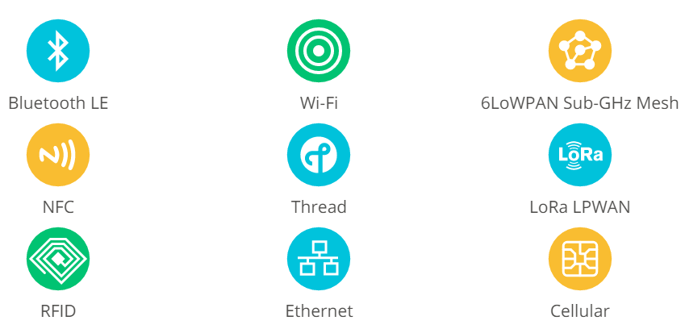
Kiến trúc của mbed OS
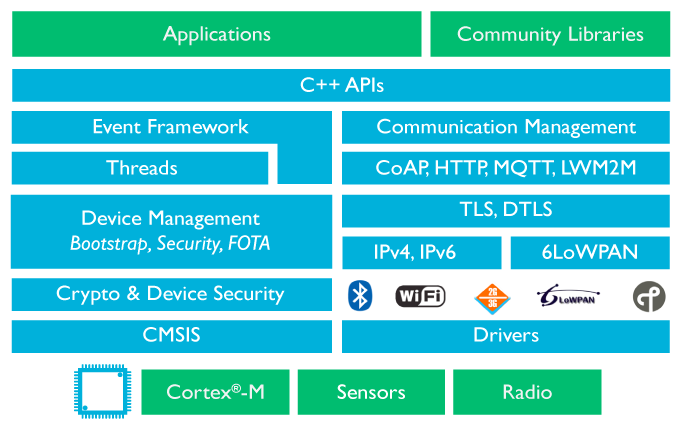
Các ứng dụng cơ bản của mbed OS
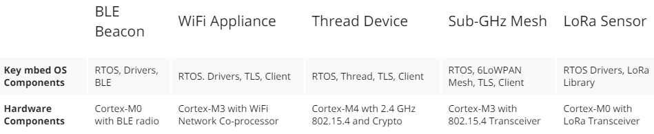
Các trang web hữu ích để tìm hiểu về mbed-OS
- https://www.mbed.com/en/platform
- https://www.mbed.com/en/platform/mbed-os/
- https://docs.mbed.com/
- https://developer.mbed.org/
- https://github.com/ARMmbed/mbed-os
PHẦN 3: SỬ DỤNG MBED ONLINE COMPILER LẬP TRÌNH CHO VBLUno51
Đúng như tên gọi của nó, mbed Online Compiler là một trình biên dịch dành cho mbed OS chạy online, chỉ với một máy tính có kết nối internet, bạn có thể dễ dàng lập trình và biên dịch ra file thực thi cho VBLUno. Phần sau đây trình bày các bước thực hiện một cách chi tiết thông qua hình ảnh.
Bước 1: Đăng ký tài khoản trên developer.mbed.org
(Nếu đã đăng ký, bạn có thể bỏ qua bước này)
Truy cập vào địa chỉ https://developer.mbed.org , đăng ký một tài khoản dành cho các developer với mbed OS. Nó là hoàn toàn miễn phí nên các bạn có thể tự tin đăng ký nhé.
Bước 2: Đăng nhập giao diện trình biên dịch
Nhấp vào nút “Compiler” hoặc truy cập vào đường dẫn https://developer.mbed.org/compiler/ 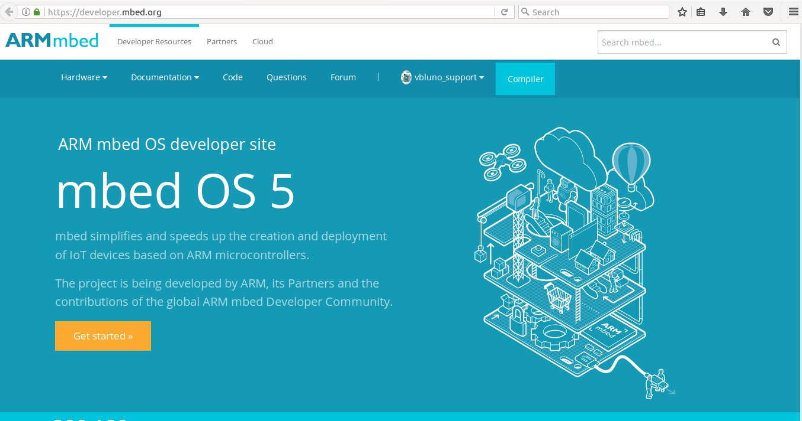
Bước 3: Chọn Device Platform để lập trình ứng dụng
-
Nhấn vào nút chọn Platform ở góc phải, phía trên màn hình. Cửa sổ Select a Platform hiện ra, nhấn vào “Add platform”
-
Bạn chọn board Nordic NRF51-DK. Đây là board có cấu hình phần cứng khá tương đồng với VBLUno51 board
-
Tiếp theo bạn chọn “Add to your mbed compiler”
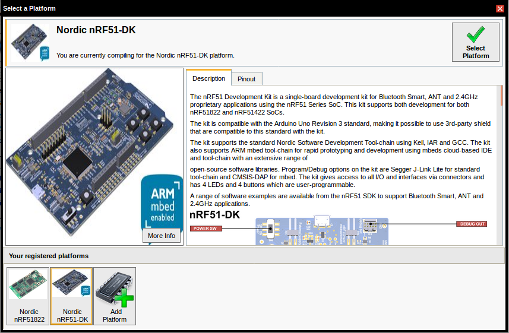
- Nhấp vào nút Compiler để quay về trình biên dịch, lúc này góc phải của trình duyệt sẽ hiển thị board Noridc NRF51-DK
Bước 4: Thực hiện một ví dụ đơn giản – Hello World Example
Sau đây chúng ta thực hiện một ví dụ đơn giản, ví dụ “vbluno51_blinky”.
-
4.1 Thêm một ví dụ sẵn có vào tài khoản của bạn
- Chọn “import a program”,
- Tìm kiếm theo từ khóa “mbed_blinky”
- Chọn ví dụ mbed_blinky trong danh sách tìm được, nhấn chọn “Import” để thêm ví dụ này vào tài khoản của bạn.

Bạn có thể sửa tên project như hình dưới đây
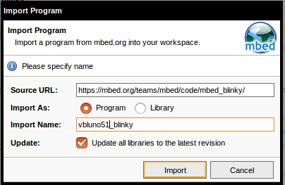
- 4.2 Sửa mã nguồn chương trình “main.cpp”:
Copy đoạn mã nguồn sau vào file main.cpp
/********************************************
VBLUNO51 BOARD
mbed Online Compiler
Project: Blink led and transmit over UART (with HWFC)
Note: select NRF51_DK platform
*********************************************/
#include "mbed.h"
/*For VBLUno51 board*/
#define PIN_TX p10
#define PIN_RX p11
#define PIN_RTS p12
#define PIN_CTS p13
#define PIN_LED p7
Serial pc(PIN_TX, PIN_RX); // tx, rx
DigitalOut led(PIN_LED);
int main() {
//Init
pc.baud(115200);
pc.set_flow_control(SerialBase::RTSCTS, PIN_RTS, PIN_CTS);
pc.printf("\r\n-------------------------------------\r\n"
"Tests for VNG VBLUno51 board\n\r"
"-------------------------------------\r\n");
//No condition loop
while(1) {
led = 1;
wait(1);
led = 0;
wait(1);
pc.printf("Finish a period\r\n");
}
return 0;
}

Chọn Save để lưu lại
- 4.3 Chọn Compile để biên dịch chương trình
Kết quả biên dịch thành công, tạo ra 1 file thực thi (*.hex) và tự động lưu về máy tính của bạn
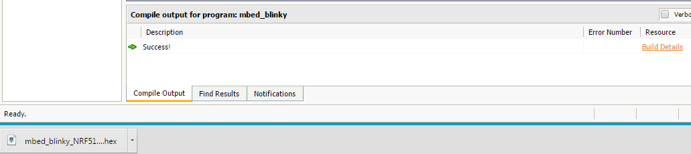
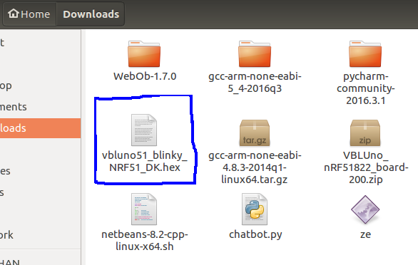
- 4.4 Nạp file thực thi vào bo mạch VBLUno51
Sau khi kết nối bo mạch VBLUno51 và mô đun DAPLink (CMSIS-DAP) đến máy tính, một ổ đĩa sẽ được thêm vào máy tính của bạn. Ổ đĩa này có tên là “DAPLINK”. Để nạp file thực thi đã được biên dịch ở bước trước vào bo mạch VBLUno51, bạn chỉ cần copy file này vào ổ đĩa trên và chờ quá trình sao chép hoàn tất.
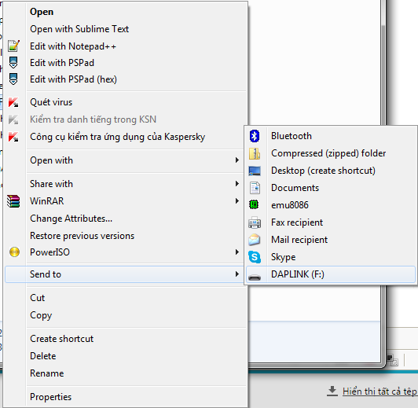
- 4.5 Chạy chương trình Sau khi nạp file thực thi, chương trình sẽ tự động chạy. Nếu mọi việc thành công, bạn sẽ thấy LED trên mạch VBLUno51 nhấp nháy sáng. Sử dụng một phần mềm có chức năng Serial Terminal như Hercules hoặc PuTTY, tạo một kết nối đến cổng COM ảo với tốc độ baud 115200, bạn sẽ quan sát được thông điệp mà VBLUno51 gửi lên máy tính như hình dưới.
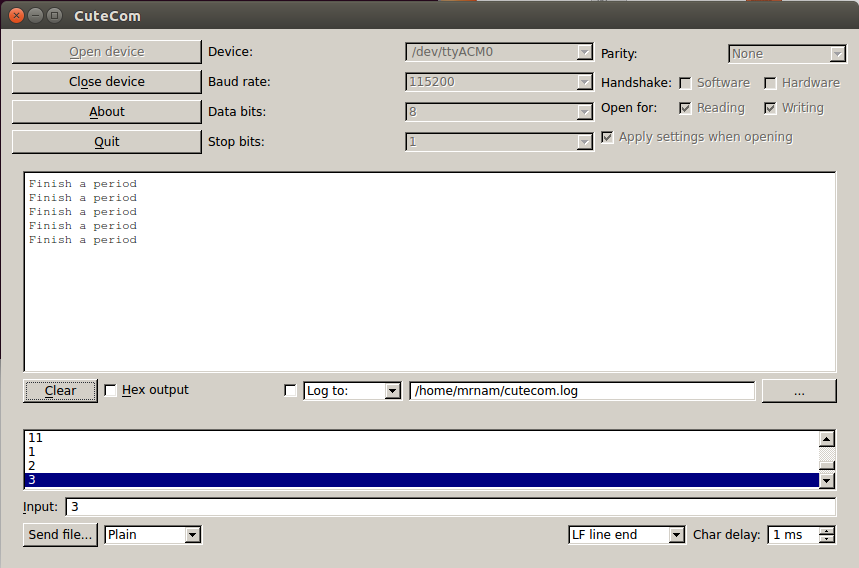